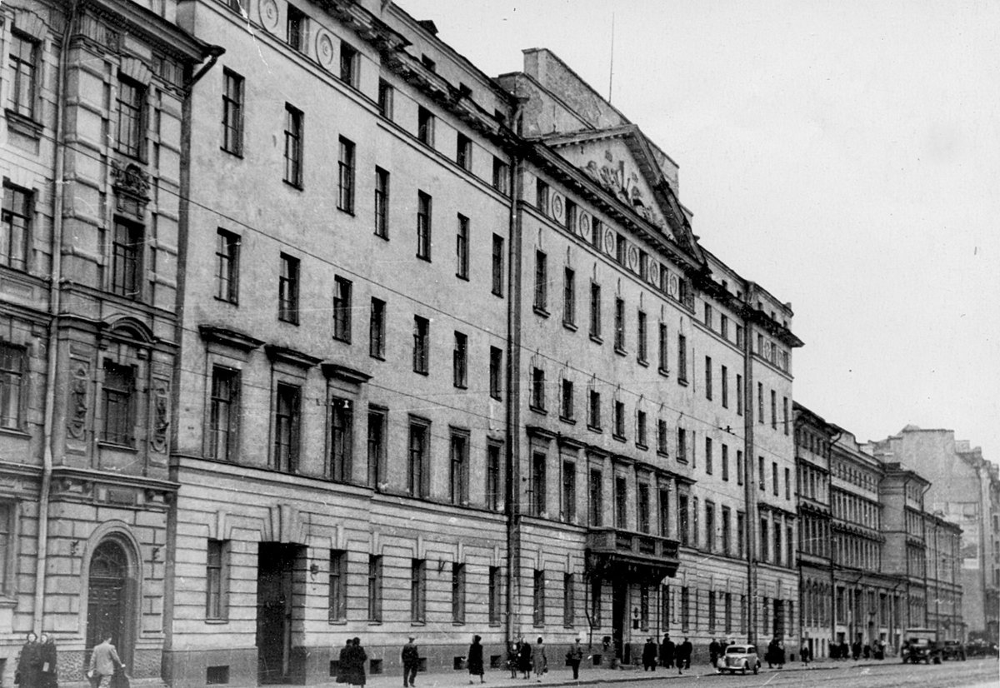
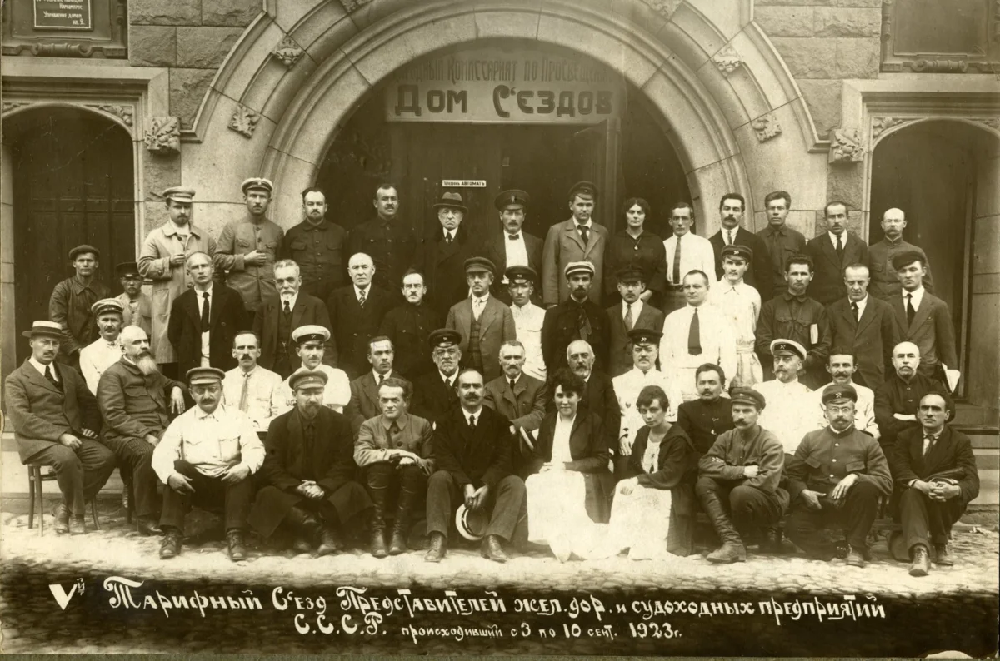
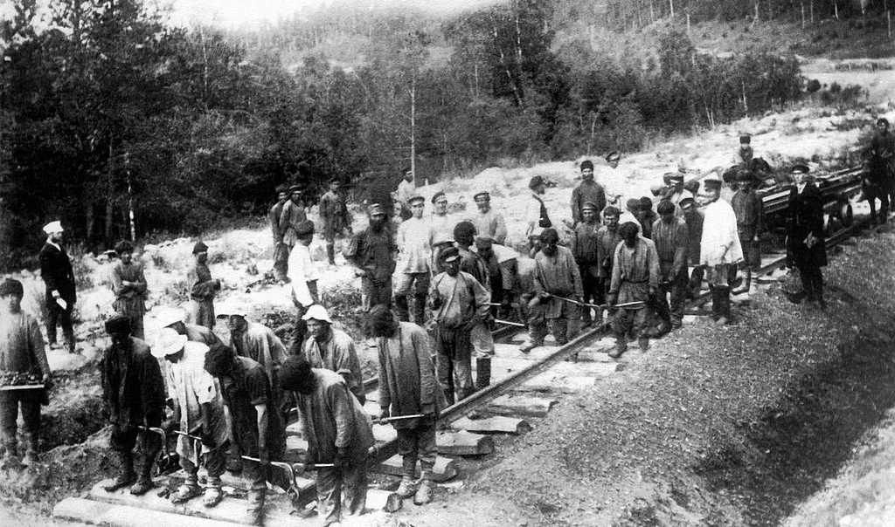

Первым значимым событием хотелось бы выделить даже не открытие железной дороги в Царском Селе, а эпизод, который произошел задолго до этого. 2 декабря 1809 года манифестом императора Александра I был учрежден Институт Корпуса инженеров путей сообщения в Санкт-Петербурге. Первым руководителем института (ныне – Петербургский университет путей сообщения) был назначен крупный инженер-механик, математик, строитель мостов и промышленных комплексов испанец Августин Августинович Бетанкур. Именно этому человеку в 1819 году суждено было стать директором Главного управления путей сообщения, создателем военно-строительной школы для подготовки офицеров-строителей и школы мастеров. По сути, именно так в нашей стране зарождалось транспортное образование, сегодня представленное в системе Министерства транспорта 18 высшими учебными заведениями, из которых девять университетских комплексов непосредственно связаны с подготовкой кадров высшего и среднего профессионального образования для железнодорожного транспорта. 
Роль Царскосельской дороги состояла в том, чтобы на практике показать выгоду такого рода проектов. Но серьезные дела стали вершиться чуть позднее, когда 1 февраля 1842 года Николай I подписал указ о сооружении первой российской железнодорожной магистрали общего пользования Санкт-Петербург – Москва. В проекте строительства дороги не только учитывалась экономическая целесообразность, но и закладывалась пропускная способность на перспективу. В этом проявилась дальновидность тогдашних руководителей. По настоянию Павла Мельникова ширина колеи была установлена равной 5 футам, или 1524 мм. С тех самых пор она стала стандартной для всех железных дорог России.
Русские инженеры уже в первые годы развития железных дорог выбрали широкоподошвенный рельс. На линии Санкт-Петербург – Москва были уложены именно такие рельсы, изготовленные на Людиновском заводе. Впоследствии этот профиль распространился по всем железным дорогам мира.
1 ноября 1851 года состоялось официальное открытие движения на Петербурго-Московской железной дороге (позже ее стали называть Николаевской, а в советское время – Октябрьской). Объемы перевозок быстро росли. Уже в 1852-м дорога перевезла 719 тыс. пассажиров и 164 тыс. т грузов. Расстояние от Санкт-Петербурга до Москвы (650 км) скорый поезд преодолевал за 12 часов.
В этот же период были заложены основы организации тягового хозяйства и эксплуатации локомотивов, которые во многом актуальны по сей день. Разве что протяженность тяговых плеч с тех пор возросла. Теперь уже внедряются полигонные технологии на пространстве нескольких дорог.
Николаевская магистраль стала первой двухпутной казенной железной дорогой в Российской империи и положила начало созданию железнодорожной сети общегосударственного значения. В разные годы на ней тестировались технологические новинки, которые потом распространялись на всю сеть.
Весомую роль на российском рынке железнодорожных перевозок в ХIХ веке играли тарифные съезды. К середине 1860-х гг. в империи существовало уже более 40 частных железнодорожных компаний, между которыми развернулась борьба за клиента. Так, возникла потребность в договорных инструментах, которые помогли бы правительству, железным дорогам и грузоотправителям находить оптимальные решения по перевозкам грузов тарифного, правового, технического и социально-политического характера. По инициативе Министерства путей сообщения был создан постоянно действующий институт – Съезд представителей русских железных дорог. Он имел статус совещательного органа, однако если решения принимались единогласно, то были обязательны для всех. Каждая железнодорожная частная компания имела на съезде один голос. Управление казенных железных дорог МПС тоже обладало одним голосом – абсолютное равноправие.
Первый общий съезд состоялся в 1869 году в Санкт-Петербурге. Всего до революции было проведено 146 таких собраний. На них обсуждались вопросы согласования и принятия нормативных актов по организации перевозок, правила технической эксплуатации, тарифы и другие коммерческие решения. Примечательно, что грузовладельцы на первые общие съезды, как правило, не приглашались, но их обращения к железнодорожникам всегда внимательно рассматривались. Чаще всего они касались установления тарифных скидок. В этом отношении мало что изменилось: сегодня промышленники обращаются к РЖД с аналогичными просьбами. Только теперь эти вопросы решаются в рамках тарифного коридора. 
Исторически сложилось так, что с момента своего появления железные дороги в России принадлежали то государству, то частным владельцам. Так, Царскосельская сооружалась и длительное время эксплуатировалась частными предпринимателями. Для строительства дороги в 1836 году было создано первое в империи железнодорожное акционерное общество. Его организовал австрийский инженер Франц Антон Герстнер, приехавший в Россию по приглашению горного ведомства. Среди учредителей были также другие видные деятели. Большую роль сыграл авторитетный и близкий к царскому двору сановник, граф Бобринский, в руках которого сосредоточилась вся финансовая деятельность общества. На уставный капитал компания выпустила 15 тыс. акций, которые раскупили 700 акционеров. Строительство Царскосельской дороги обошлось в 5 млн руб. ассигнациями.
Несмотря на то, что укладка первой крупной магистрали между Санкт-Петербургом и Москвой была начата на средства казны, одновременно достаточно долго предпринимались попытки привлечения к проекту частного капитала. В 1850-х гг. правительство разрешило строить небольшие железнодорожные линии, не имеющие стратегического значения, отечественным предпринимателям, но потом их выкупало за счет казны. Власти, с одной стороны, хотели привлечь капитал, в том числе иностранный, а с другой – всячески пытались монополизировать руководство частным железнодорожным строительством. Специально для этого было создано частно-государственное Главное общество российских железных дорог, но уже скоро оно оказалось на грани банкротства – и в итоге правительство выкупило все его имущество. Первый опыт создания частно-государственного железнодорожного предприятия монопольного типа в России оказался неудачным.
В 1860–1870-х гг. правительство стало активно поддерживать отечественных предпринимателей, желающих строить железные дороги. Акционеры получили право не только прокладывать, но и эксплуатировать сооружаемые ими линии, что привело к настоящей «рельсовой горячке». Акционерные общества получали концессию (разрешение) на строительство железной дороги при условии привлечения зарубежных инвестиций. Однако схема была куда более запутанной: создав акционерное общество, его владельцы обращались в Министерство финансов с заявками на выпуск облигаций и получение кредита на непосредственное строительство линии железной дороги, а в качестве обеспечения кредита в государственное казначейство предоставлялись те же облигации общества. В итоге львиную долю средств в отрасль инвестировало все-таки государство, хотя частные инвестиции постепенно тоже росли, поскольку оказались делом выгодным.
В 1892 году, ко времени назначения сторонника государственного владения железными дорогами Сергея Витте на пост министра финансов, частным акционерным обществам принадлежало более 70% российских железных дорог, а к моменту отставки Витте в 1903-м соотношение стало прямо противоположным: уже почти 70% дорог были казенными. Была развернута программа по выкупу железных дорог в казну и строительству линий за счет государства. Хотя некоторые проекты продолжали воплощаться частниками. После Октябрьской революции казенные железные дороги окончательно перешли в ведение государства, а в 1918-м были национализированы частные дороги. 